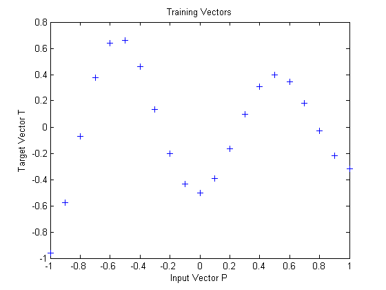

Radial Basis Approximation
This demo uses the NEWRB function to create a radial basis network that approximates a function defined by a set of data points.
Copyright 1992-2002 The MathWorks, Inc. $Revision: 1.14 $ $Date: 2002/03/29 19:36:06 $
Define 21 inputs P and associated targets T.
P = -1:.1:1; T = [-.9602 -.5770 -.0729 .3771 .6405 .6600 .4609 ... .1336 -.2013 -.4344 -.5000 -.3930 -.1647 .0988 ... .3072 .3960 .3449 .1816 -.0312 -.2189 -.3201]; plot(P,T,'+'); title('Training Vectors'); xlabel('Input Vector P'); ylabel('Target Vector T');
We would like to find a function which fits the 21 data points. One way to do this is with a radial basis network. A radial basis network is a network with two layers. A hidden layer of radial basis neurons and an output layer of linear neurons. Here is the radial basis transfer function used by the hidden layer.
p = -3:.1:3; a = radbas(p); plot(p,a) title('Radial Basis Transfer Function'); xlabel('Input p'); ylabel('Output a');
The weights and biases of each neuron in the hidden layer define the position and width of a radial basis function. Each linear output neuron forms a weighted sum of these radial basis functions. With the correct weight and bias values for each layer, and enough hidden neurons, a radial basis network can fit any function with any desired accuracy. This is an example of three radial basis functions (in blue) are scaled and summed to produce a function (in magenta).
a2 = radbas(p-1.5); a3 = radbas(p+2); a4 = a + a2*1 + a3*0.5; plot(p,a,'b-',p,a2,'b--',p,a3,'b--',p,a4,'m-') title('Weighted Sum of Radial Basis Transfer Functions'); xlabel('Input p'); ylabel('Output a');
The function NEWRB quickly creates a radial basis network which approximates the function defined by P and T. In addition to the training set and targets, NEWRB takes two arguments, the sum-squared error goal and the spread constant.
eg = 0.02; % sum-squared error goal sc = 1; % spread constant net = newrb(P,T,eg,sc);
NEWRB, neurons = 0, SSE = 3.69051
To see how the network performs, replot the training set. Then simulate the network response for inputs over the same range. Finally, plot the results on the same graph.
plot(P,T,'+'); xlabel('Input'); X = -1:.01:1; Y = sim(net,X); hold on; plot(X,Y); hold off; legend({'Target','Output'})